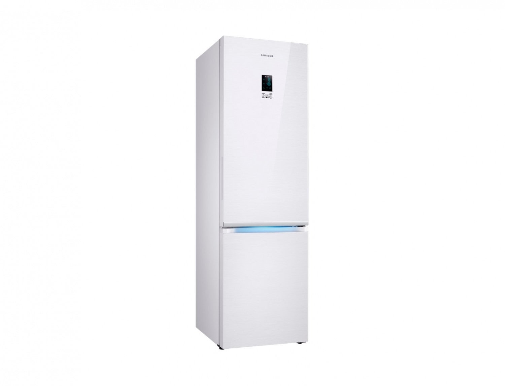
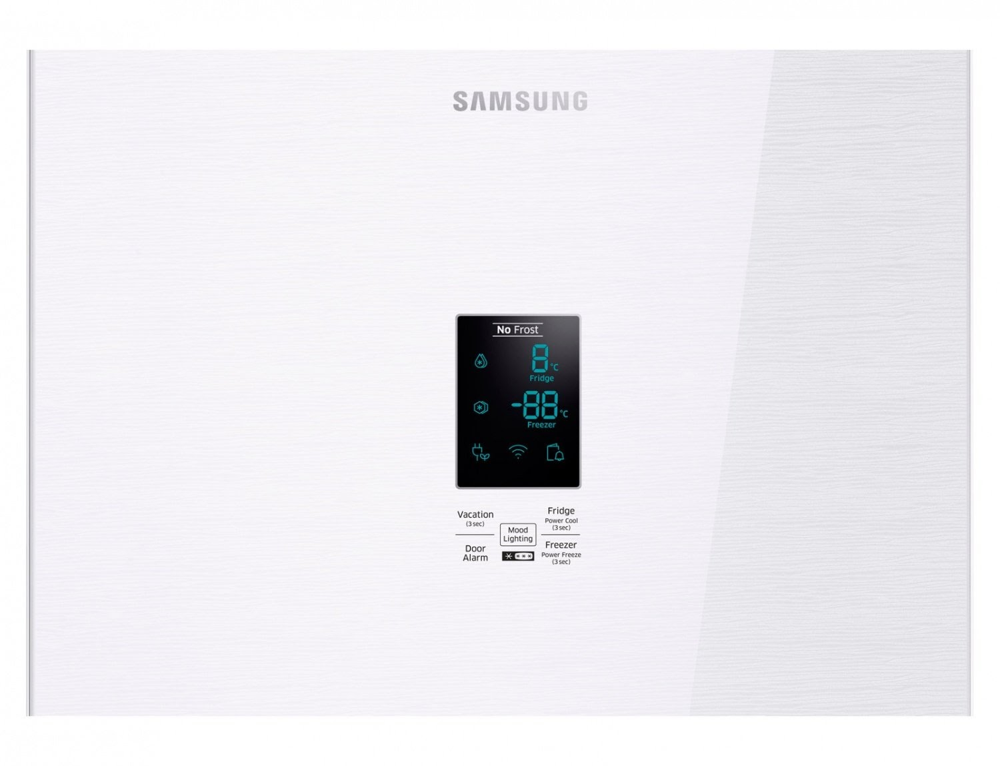
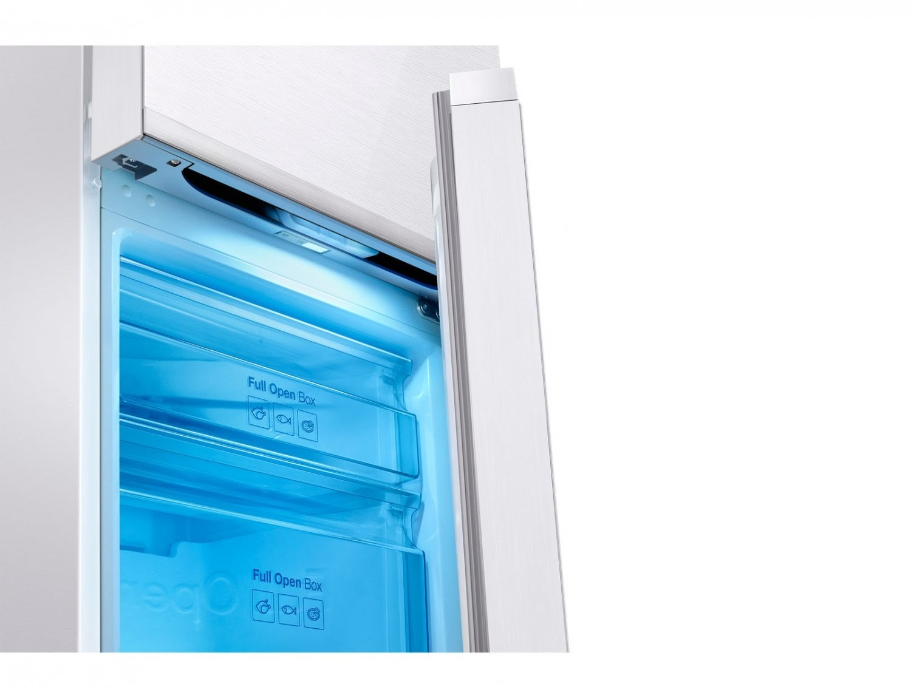
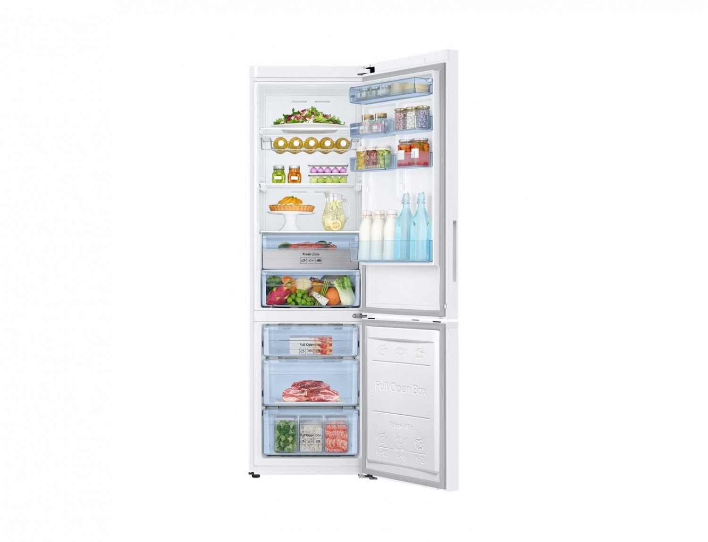

Внешнее превосходство
RB37K63401L— модель премиум класса. Экстравагантный дизайн стеклянной двери является элементом декора, подчеркивающим современность и стильность кухонного пространства. Расцветка отдельно стоящей холодильной установки называется «белое зеркало». Морозильник расположен снизу. Конструкторы увеличили полезный объем до 367 литров, за счет толщины стенок камер, при этом уровень теплоизоляции и внешние габариты остались неизменными.

Множество режимов на одной удобной панели
На дверце рабочей зоны размещена сенсорная матрица, с помощью которой регулируются настройки и задаются рабочие параметры:Изменение температуры в холодильном и морозильном отсеке.Быстрое охлаждение — в течение двух с половиной часов холодильная установка работает в полную силу, быстро охлаждая продукты.Быстрое замораживание — увеличивается скорость заморозки за счет максимальной скорости работы вентиляционной системы.Опция «Отпуск» — температура холодильного отсека повышается до 17 градусов, морозильник продолжает работать в установленном режиме. Рекомендуется использовать при отъезде на длительное время для экономии электропотребления.Включение/отключение звукового сигнала, информирующего о незакрытой двери.Регулировка декоративной подсветки, расположенной под ручкой холодильного отсека. Предусмотрена возможность настройки постоянной работы LED-освещения.

Инновационная система хранения
Созданы идеальные условия для сохранения свежести продуктов и всевозможные варианты размещения емкостей любого объема:выдвижной контейнер «свежей зоны» — в отсеке обеспечены наилучшие условия для увеличения срока свежести мяса, птицы или рыбы без заморозки;полка-трансформер позволит освободить пространство для размещения трехлитровой банки или большой кастрюли;съемные дверные корзины можно устанавливать на разные уровни по собственному усмотрению, чтобы выделить зону для хранения высоких бутылок;специальный яичный лоток;овощи и фрукты помещаются в отдельный отсек;металлическая полка для винных бутылок;контейнер для льда. Полки, корзины и выдвижные ящики выполнены из закаленного стекла.

Эффективное охлаждение
Для сохранения свежести и аппетитного вида продуктов, инженеры внедрили четыре технические разработки:
Цифровой инверторный компрессор обеспечивает тишину при работе, низкое потребление энергии и долгий срок эксплуатации.
Технология No Frost препятствует появлению ледяного налета, инея и снега на стенах агрегата и продуктах питания. Разморозка происходит в автоматическом режиме.
Опция Multi Flow способствует равнозначному распределению холодных потоков для быстрого снижения температуры и лучшего сохранения пищи.All-around Cooling — система поддержки равнозначного температурного режима по всему объему камер
Холодный воздух проникает в каждую точку рабочего пространства через отверстия вентиляции.
